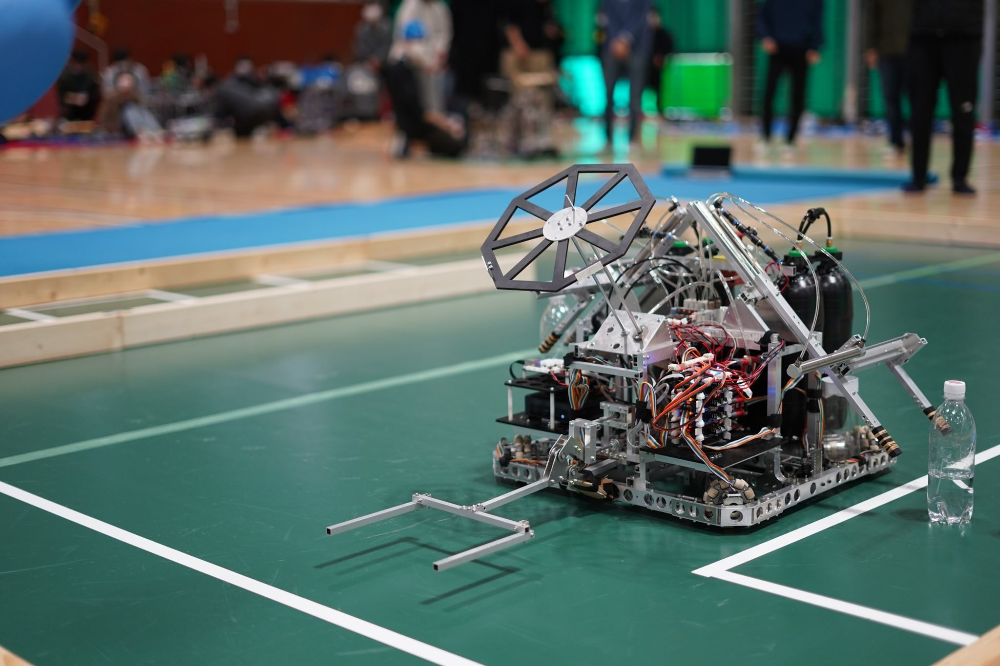
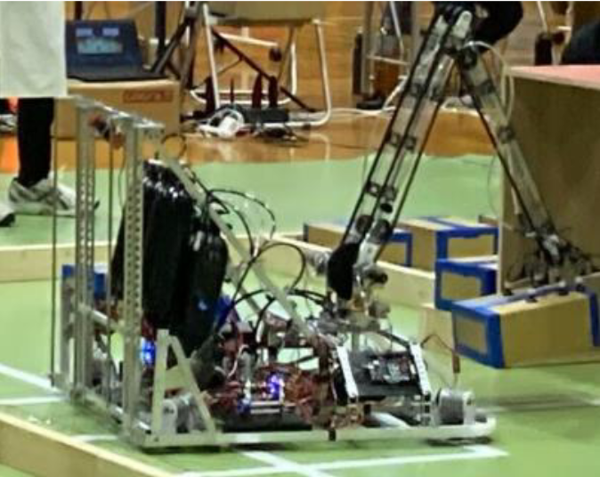
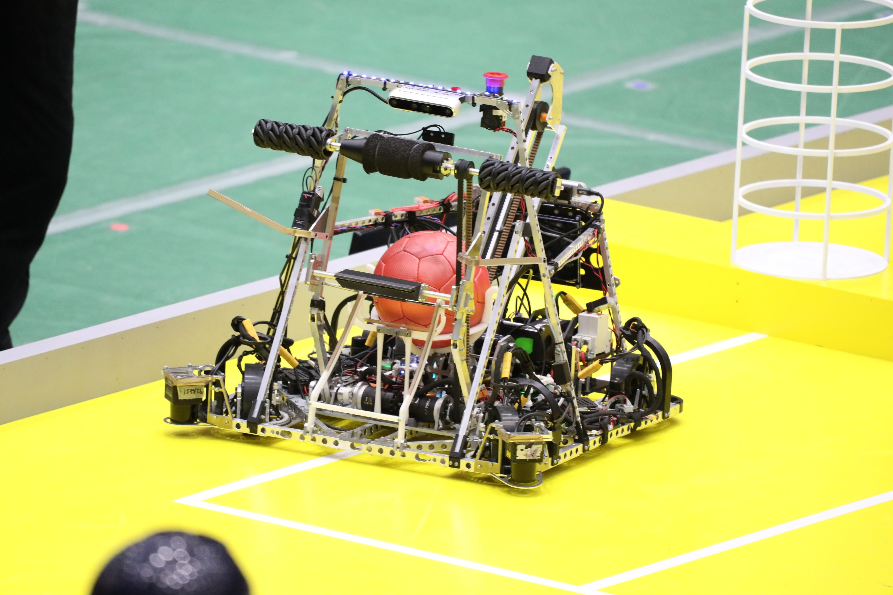
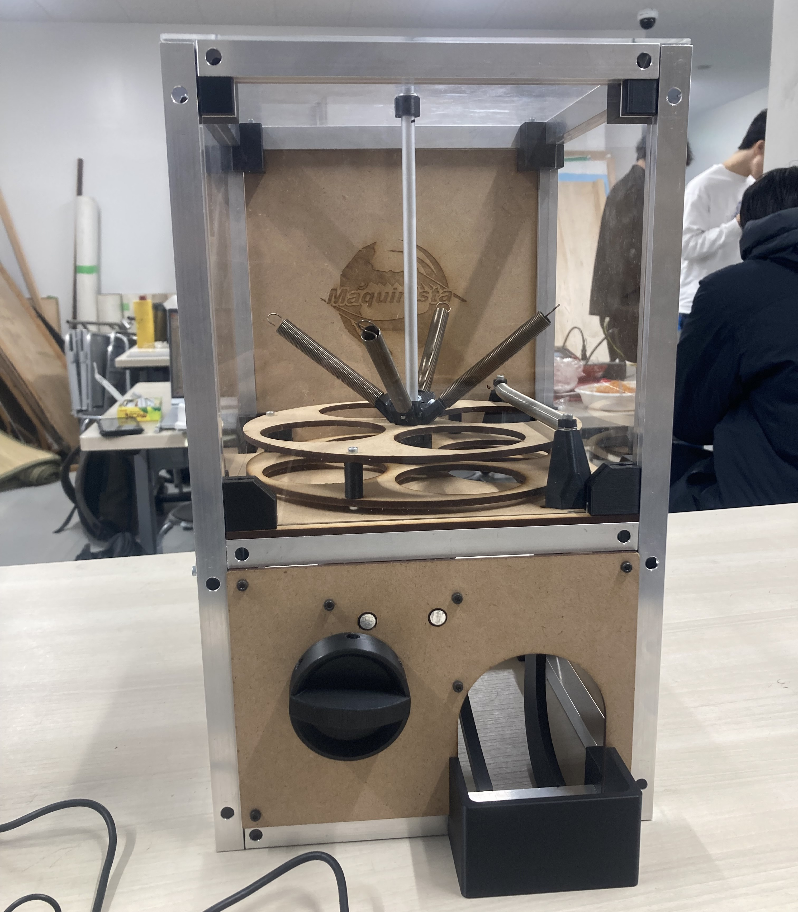

Portfolio
坂本和優
Kazumasa Sakamoto
専攻：機械
東京科学大学工学院機械系に所属しています。 ロボット技術研究会では、主にメカ設計や機構の検討に取り組んでいました。 最近はソフトもできるようになるために勉強中。
Education
学歴
東京科学大学 工学院機械系
東京科学大学 工学院機械系 機械コース
Affiliation
所属
2022.4 –在籍中
ロボット技術研究会
東京科学大学
2025.4 – 2026.3
岡田研究室
東京科学大学 工学院機械系
2026.4 –在籍中
難波江研究室
東京科学大学 工学院機械系
Skills
使用経験のあるツール・スキル
工作機械
CAD・CAM
プログラミング言語
Works
ロボット技術研究会での成果物

関東春ロボコン2023
写真は東海地区交流ロボコン2023に出場したロボットです。 私は帽子を飛ばす機構のメカ設計を行いました。 軽量化及び空気抵抗の削減で帽子を遠くまで飛ばせるようにしました。

東海地区交流ロボコン2023
写真は東海地区交流ロボコン2023に出場したロボットです。 私は機体前方のアームのメカ設計を行いました。 こだわった点はベルト伝達を用いたことです。 これによりモーターを根元側に集約し先端重量を抑えて重心を根元に寄せつつ、ハンドの位置決め用と向き変更用の駆動を分離し、制御しやすい機構にしました。 決勝トーナメント進出。

NHK学生ロボコン2024
写真はNHK学生ロボコン2024に出場したロボットです。 私はローラー回収機構のメカ設計及び、射出したボールの軌道とボールが着地した後転がらないために必要なバックスピンの計算を行いました。 予選は1勝1敗で惜しくも決勝トーナメントに進出できませんでした。

工大祭2024
写真は工大祭で展示したガチャガチャです。 中に歴代機体を再現したフィギュアが入ったカプセルを入れ来場者が回すことができるようにしました。 自分ともう一人のメンバーで設計・製作を行いました。 側面をアクリルで作っており横からだと中のからくりが見えるようにしたのがこだわった点です。